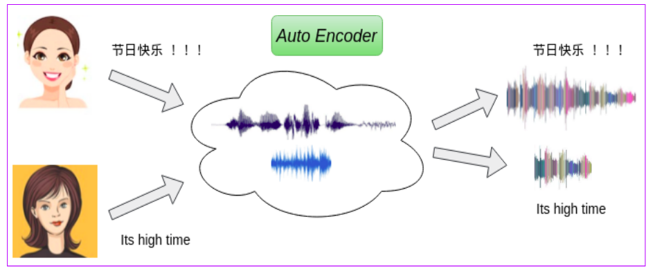

Sai Sirisha Rallabandi and Suryakanth V Gangashetty
Speech Processing Laboratory
International Institute of Information Technology Hyderabad
A simple approach to address the cross-lingual voice conversion has been proposed. We implement two variants of Neural Networks for the task. The two networks are: i) a traditional auto-encoder and ii) a conventional DNN . Utizing an autoencoded speech has facilitated us with the parallel corpus for the cross-lingual conversion task. A pictographic representation of the same is displayed.

Speech Samples thus obtained from the designed experiments are presented below.